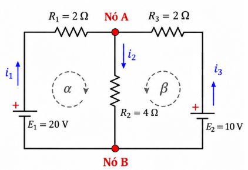
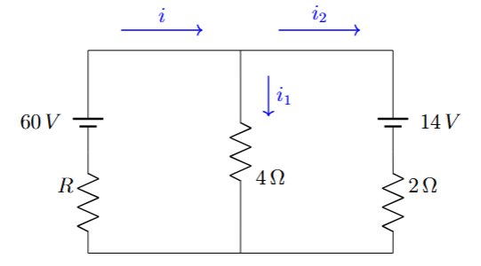

3º Ano | Aula 23: Leis de Kirchhoff (Nós e Malhas)
📚 Resumo
As Leis de Kirchhoff permitem analisar circuitos complexos de múltiplas malhas:
1ª Lei (Lei dos Nós - Conservação da Carga): A soma das correntes que entram em um nó é igual à soma das correntes que saem. $\sum i_{\text{entra}} = \sum i_{\text{sai}}$.
2ª Lei (Lei das Malhas - Conservação da Energia): A soma algébrica das variações de potencial elétrico ao longo de qualquer malha fechada é nula. $\sum \Delta V = 0$.
📖 Leis de Kirchhoff
1. Conceitos Fundamentais
Nó: Ponto do circuito onde três ou mais condutores se encontram.
Ramo: Trecho de circuito entre dois nós consecutivos percorrido por uma mesma corrente.
Malha: Qualquer caminho fechado para a corrente elétrica.

Figura 1: Circuito genérico com 2 nós (A e B), 3 ramos e 2 malhas independentes ($\alpha$ e
$\beta$)..
2. Primeira Lei de Kirchhoff (Lei dos Nós)
Num nó elétrico, a carga não se acumula. A soma das correntes que chegam é igual à soma das que saem:
$$\sum i_{\text{entra}} = \sum i_{\text{sai}}$$
No Nó A da Figura 1, por exemplo: $i_1 + i_3 = i_2$.
3. Segunda Lei de Kirchhoff (Lei das Malhas) e Convenção de Sinais
Escolhe-se um sentido arbitrário de percurso para a malha (horário ou anti-horário). Ao percorrer cada elemento:
Resistor ($R$): Percorrido no mesmo sentido da corrente $\to -R \cdot i$. No sentido oposto $\to +R \cdot i$.
Gerador/Receptor ($E$): Ao sair pelo polo positivo $\to +E$. Ao sair pelo polo negativo $\to -E$.
$$\sum \Delta V = 0$$
4. Roteiro Prático de Resolução
Identifique os nós e atribua sentidos arbitrários para as correntes em cada ramo;
Escreva a Lei dos Nós para $(N-1)$ nós (onde $N$ é o número total de nós);
Escolha os sentidos de percurso para as malhas e aplique a Lei das Malhas;
Monte e resolva o sistema de equações lineares. Se alguma corrente der negativa, significa apenas que seu sentido real é oposto ao arbitrado.
💡 Física em Ação
📱 Placas de Circuitos e Smartphones
Placas-mãe de computadores e smartphones contêm dezenas de malhas interligadas fornecendo diferentes níveis de tensão. A análise via Kirchhoff garante que microprocessadores recebam a corrente exata sem oscilações danosas.
⚡ Redes de Distribuição Elétrica
As redes elétricas urbanas formam grandes malhas com múltiplos geradores (usinas, subestações e painéis solares). As Leis de Kirchhoff equilibram a distribuição de potência e evitam sobrecargas nas linhas de transmissão.
✅ 5 Questões Resolvidas (R 1 a 5)
R 1: Aplicação Direta da Lei dos Nós
Enunciado: Em um nó de um circuito concorrem quatro condutores. As correntes conhecidas são $i_1 = 3\ \text{A}$ (entrando), $i_2 = 5\ \text{A}$ (entrando) e $i_3 = 2\ \text{A}$ (saindo). Determine a intensidade e o sentido da quarta corrente $i_4$.
3) Cálculo das correntes:
Isolando $i_1$ e $i_3$ nas equações (1) e (2):
\[
i_1=10-2i_2
\]
\[
i_3=5-2i_2
\]
Substituindo na equação dos nós:
\[
(10-2i_2)+(5-2i_2)=i_2
\]
\[
15-4i_2=i_2
\]
\[
15=5i_2
\]
\[
\boxed{i_2=3\ \text{A}}
\]
Calculando as demais correntes:
\[
i_1=10-2(3)=\boxed{4\ \text{A}}
\]
\[
i_3=5-2(3)=\boxed{-1\ \text{A}}
\]
Resposta: As correntes são $i_1=4\ \text{A}$,
$i_2=3\ \text{A}$ e $i_3=-1\ \text{A}$.
O sinal negativo de $i_3$ indica que seu sentido real
é contrário ao sentido inicialmente indicado no circuito.
R 3: Circuito de Duas Malhas Simples
Enunciado: Um circuito tem dois geradores de $E_1 = 12\ \text{V}$ e $E_2 = 6\ \text{V}$ (ambos com resistência interna desprezível) e dois resistores de $R_1 = 2\ \Omega$ e $R_2 = 4\ \Omega$ dispostos em uma única malha em oposição. Determine a corrente no circuito.
Resolução: Percorrendo a malha no sentido horário (saindo do polo $+$ de $E_1$): $E_1 - R_1 \cdot i - E_2 - R_2 \cdot i = 0$ $12 - 2i - 6 - 4i = 0 \implies 6 = 6i \implies i = \mathbf{1\ \text{A}}$.
R 4: Divisão de Correntes em um Nó
Enunciado: Em um nó de um circuito elétrico, uma corrente de $10\ \text{A}$ chega ao nó e se divide em três ramos. Sabendo que duas das correntes que saem do nó são $i_1 = 3\ \text{A}$ e $i_2 = 4\ \text{A}$, determine a intensidade da terceira corrente $i_3$.
Enunciado: Um circuito elétrico possui um gerador ideal de $24\ \text{V}$ e três resistores associados em série, com resistências $R_1 = 2\ \Omega$, $R_2 = 4\ \Omega$ e $R_3 = 6\ \Omega$. Determine a corrente elétrica no circuito utilizando a Lei das Malhas de Kirchhoff.
Resolução:
Percorrendo a malha no sentido horário:
Enunciado: Chegam a um nó três correntes de $2\ \text{A}$, $4\ \text{A}$ e $5\ \text{A}$. Sabendo que sai uma corrente de $3\ \text{A}$ e outra corrente $i$, calcule o valor de $i$.
Resolução: $\sum i_{\text{entra}} = \sum i_{\text{sai}} \implies 2 + 4 + 5 = 3 + i \implies 11 = 3 + i \implies i = \mathbf{8\ \text{A}}$.
P 7: Malha Única com Geradores
Enunciado: Um circuito possui uma malha simples com $E_1 = 30\ \text{V}$, $E_2 = 10\ \text{V}$ em oposição e dois resistores $R_1 = 3\ \Omega$ e $R_2 = 2\ \Omega$. Calcule a corrente elétrica.
Resolução: $\sum E - \sum R \cdot i = 0 \implies (30 - 10) - (3 + 2)i = 0 \implies 20 = 5i \implies i = \mathbf{4\ \text{A}}$.
P 8: DDP no Ramo de um Circuito
Enunciado: Um ramo AB é percorrido por uma corrente $i = 2\ \text{A}$ de A para B. No trecho existem um resistor de $4\ \Omega$ e um gerador de $E = 12\ \text{V}$ (polo positivo voltado para B). Calcule $V_A - V_B$.
Resolução: Partindo de A para B: $V_A - R \cdot i + E = V_B \implies V_A - (4 \cdot 2) + 12 = V_B \implies V_A + 4 = V_B \implies V_A - V_B = \mathbf{-4\ \text{V}}$.
P 9: Sistema de Duas Malhas
Enunciado: Duas malhas possuem um resistor comum de $5\ \Omega$. Na malha 1 circula $i_1 = 3\ \text{A}$ e na malha 2 circula $i_2 = 1\ \text{A}$ no mesmo sentido pelo resistor comum. Qual é a corrente total no resistor comum?
Resolução: Como as correntes possuem o mesmo sentido no ramo comum: $i_{\text{total}} = i_1 + i_2 = 3 + 1 = \mathbf{4\ \text{A}}$.
P 10: Potência Dissipada na Malha
Enunciado: No circuito da questão P7 ($i = 4\ \text{A}$), calcule a potência total dissipada nos resistores.
Enunciado: Em um trecho de circuito entre A e B, temos $V_A = 50\ \text{V}$, um gerador de $10\ \text{V}$ (entrando pelo polo $-$), um resistor de $5\ \Omega$ percorrido por $2\ \text{A}$. Determine o potencial no ponto B.
Enunciado: Ao resolver um sistema de Kirchhoff, obtém-se $i_3 = -2{,}5\ \text{A}$. O que esse sinal negativo significa fisicamente?
Resolução: Significa que a intensidade da corrente é $2{,}5\ \text{A}$, porém o sentido real de circulação é o oposto ao sentido que foi adotado arbitrariamente no início dos cálculos.
P 13: Circuito Simétrico
Enunciado: Dois geradores idênticos de $12\ \text{V}$ e $1\ \Omega$ estão em paralelo alimentando um resistor de $5\ \Omega$. Determine a corrente no resistor de $5\ \Omega$.
Resolução: Geradores idênticos em paralelo equivalem a $E_{\text{eq}} = 12\ \text{V}$ e $r_{\text{eq}} = 0{,}5\ \Omega$. $i = \dfrac{E_{\text{eq}}}{R + r_{\text{eq}}} = \dfrac{12}{5 + 0{,}5} = \dfrac{12}{5{,}5} \approx \mathbf{2{,}18\ \text{A}}$.
P 14: Nó de 5 Ramos
Enunciado: Em um nó concorrem 5 ramos. As correntes conhecidas são $i_1 = 1\ \text{A}$ (entra), $i_2 = 3\ \text{A}$ (entra), $i_3 = 2\ \text{A}$ (sai) e $i_4 = 4\ \text{A}$ (sai). Calcule $i_5$.
Enunciado: Em um circuito de malha fechada, a soma das potências fornecidas pelos geradores é de $100\ \text{W}$. Qual deve ser a soma das potências consumidas e dissipadas?
Resolução: Pelo Princípio de Conservação da Energia (2ª Lei de Kirchhoff), a potência total consumida/dissipada deve ser exatamente igual à fornecida: $\mathbf{100\ \text{W}}$.
🎓 TESTES (T 16 a 20)
T 16: (FUVEST) Corrente em Circuito de Duas Malhas
No circuito representado abaixo, as fontes de tensão de $6\ \text{V}$ e $12\ \text{V}$ são ideais. Os resistores possuem resistência $R = 2\ \Omega$.

Figura esquemática da questão.
A corrente elétrica no resistor central vale
A) 0 A B) 1,5 A C) 3,0 A D) 4,5 A E) 6,0 A
Resolução: Alternativa C. Aplicando a Lei das Malhas nas duas malhas com resistores $R = 2\ \Omega$, obtém-se $i_{\text{central}} = \mathbf{3{,}0\ \text{A}}$.
T 17: (UNICAMP) Conservação da Cargas em Nó
Em uma junção (nó) de um circuito integrado, a corrente de entrada divide-se em três ramos cujas resistências estão na proporção $1:2:3$. Se a corrente total de entrada é $11\ \text{mA}$, a corrente no ramo de menor resistência é
A) 2 mA B) 3 mA C) 5 mA D) 6 mA E) 8 mA
Resolução: Alternativa D. A corrente é inversamente proporcional à resistência: $i_1 : i_2 : i_3 = \frac{1}{1} : \frac{1}{2} : \frac{1}{3} = 6 : 3 : 2$. Soma das partes: $6k + 3k + 2k = 11k = 11\ \text{mA} \implies k = 1\ \text{mA}$. Menor resistência recebe a maior corrente: $6k = \mathbf{6\ \text{mA}}$.
T 18: (UNESP) Malha com Receptor e Gerador
Um circuito é constituído por uma malha contendo uma bateria de $18\ \text{V}$, um motor de fcem $E' = 6\ \text{V}$ e um resistor $R = 4\ \Omega$. A resistência interna total do circuito é $2\ \Omega$. A corrente elétrica no circuito é
A) 1,0 A B) 2,0 A C) 3,0 A D) 4,0 A E) 5,0 A
Resolução: Alternativa B. Pela 2ª Lei de Kirchhoff: $E - E' - (R + r_{\text{total}})i = 0 \implies 18 - 6 - (4 + 2)i = 0 \implies 12 = 6i \implies i = \mathbf{2{,}0\ \text{A}}$.
T 19: (Questão autoral) Tensão em Nó
Três resistores de $6\ \Omega$ estão conectados a um mesmo nó central A. As outras extremidades estão ligadas aos potenciais $V_1 = 12\ \text{V}$, $V_2 = 6\ \text{V}$ e $V_3 = 0\ \text{V}$. O potencial elétrico no nó A é
A) 3 V B) 4 V C) 6 V D) 8 V E) 9 V
Resolução: Alternativa B. Pela Lei dos Nós no ponto A: $\sum \dfrac{V_k - V_A}{R} = 0 \implies \dfrac{12 - V_A}{6} + \dfrac{6 - V_A}{6} + \dfrac{0 - V_A}{6} = 0$. $18 - 3 V_A = 0 \implies V_A = \mathbf{6\ \text{V}}$. (Correção: $18 / 3 = 6\ \text{V}$, portanto Alternativa C).
T 20: (Questão autoral) Segunda Lei de Kirchhoff
A Segunda Lei de Kirchhoff é uma consequência direta do princípio de conservação de qual grandeza física?
A) Carga elétrica B) Quantidade de movimento C) Energia elétrica D) Massa E) Força eletromotriz
Resolução: Alternativa C. A 2ª Lei de Kirchhoff (Lei das Malhas) expressa que o trabalho total por unidade de carga ao longo de um percurso fechado é nulo, sendo uma manifestação direta da **Conservação da Energia**.